Part 1: Fun with Filters
Part 1.1: Convolutions From Scratch!
Convolution with 4 Loops
def convolve_4loops(image, kernel, padding=True):
"""Convolution with 4 nested loops with padding"""
if padding:
pad_h, pad_w = kernel.shape[0] // 2, kernel.shape[1] // 2
padded = np.pad(image, ((pad_h, pad_h), (pad_w, pad_w)), mode='constant')
else:
padded = image
k_h, k_w = kernel.shape
i_h, i_w = padded.shape
output = np.zeros((i_h - k_h + 1, i_w - k_w + 1))
for i in range(output.shape[0]):
for j in range(output.shape[1]):
for ki in range(k_h):
for kj in range(k_w):
output[i, j] += padded[i + ki, j + kj] * kernel[ki, kj]
return output
Convolution with 2 Loops
def convolve_2loops(image, kernel, pad=True):
"""Convolution with 2 nested loops with padding"""
if pad:
pad_h, pad_w = kernel.shape[0] // 2, kernel.shape[1] // 2
padded = np.pad(image, ((pad_h, pad_h), (pad_w, pad_w)), mode='constant')
else:
padded = image
k_h, k_w = kernel.shape
i_h, i_w = padded.shape
output = np.zeros((i_h - k_h + 1, i_w - k_w + 1))
for i in range(output.shape[0]):
for j in range(output.shape[1]):
output[i, j] = np.sum(padded[i:i+k_h, j:j+k_w] * kernel)
return output
Runtime Comparison and Boundary Handling
The 4 loop convolution function runs in O(N^4) time and the 2 loop convolution function runs in O(N^2) time, both significantly
slower than scipy.signal.convolve2d. From empirical testing, double loop convolution took on average 11.98 seconds to convolve my selfie
with the 9x9 box filter, while scipy.signal.convolve2d only took 0.44 seconds!
Boundary handling relates closely to padding. My implementations explicitly 0-pad if the pad argument is True. For scipy.signal.convolve2d,
padding is controlled by the boundary argument: "fill" pads with a constant value (i.e., fillvalue), while "wrap" uses periodic
and "symm" uses symmetric boundary conditions.
Image Results
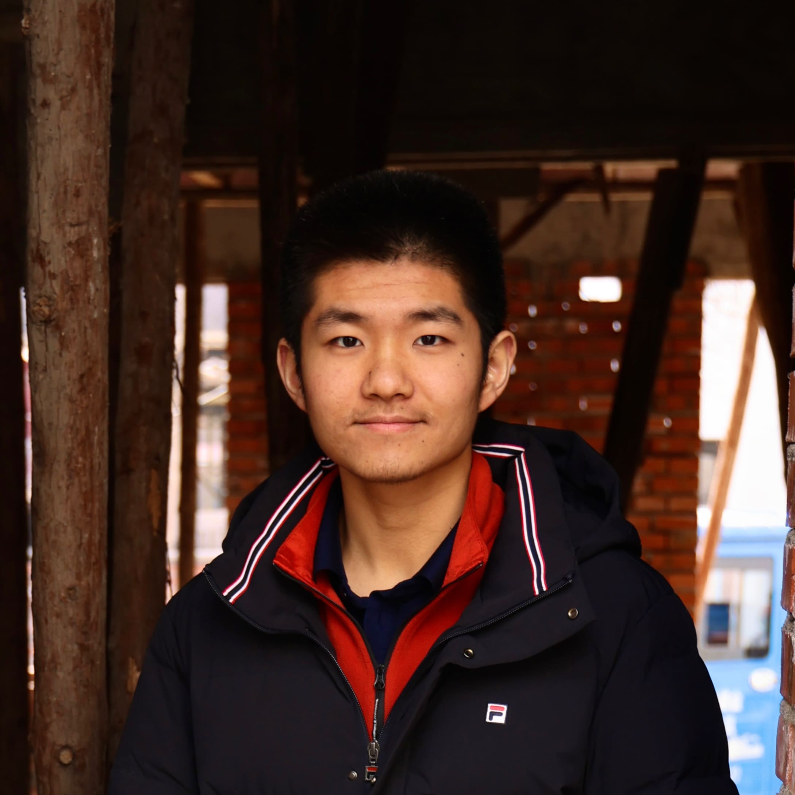
Original Selfie
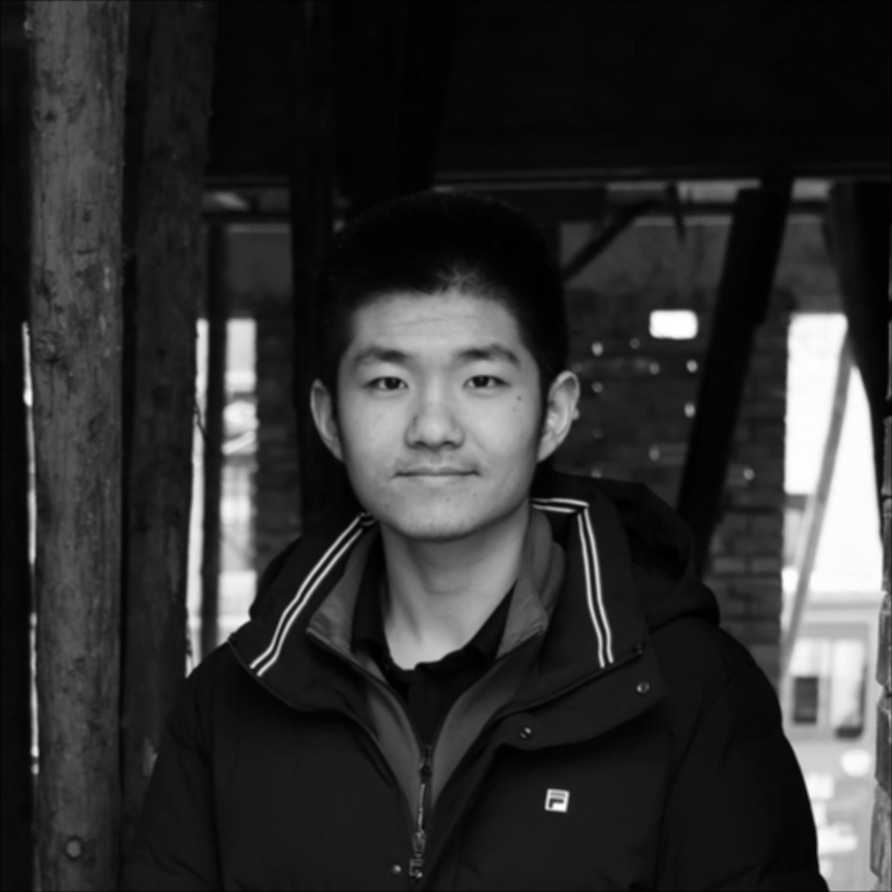
Selfie (Grayscale) Convolved with 9x9 Box Filter
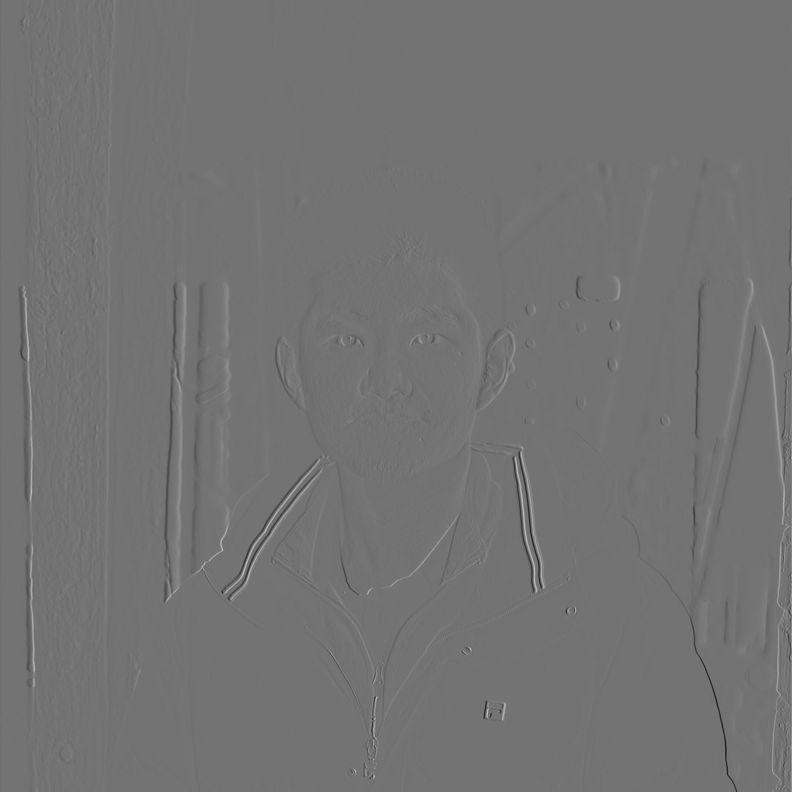
Selfie (Grayscale) Convolved with D_x Filter
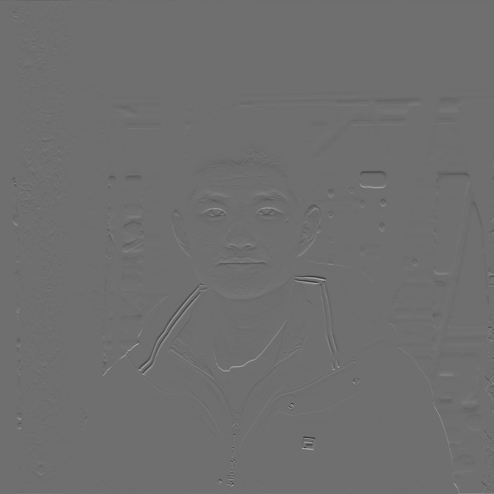
Selfie (Grayscale) Convolved with D_y Filter
Part 1.2: Finite Difference Operator
Image Results

Original Cameraman
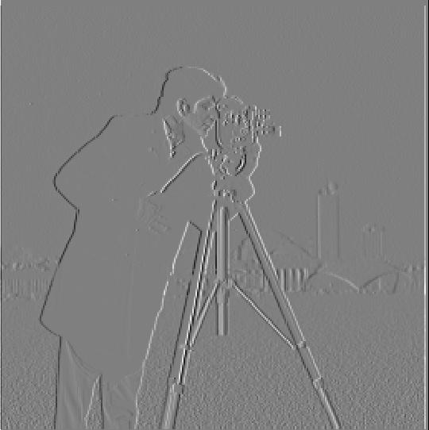
Cameraman Convolved with D_x
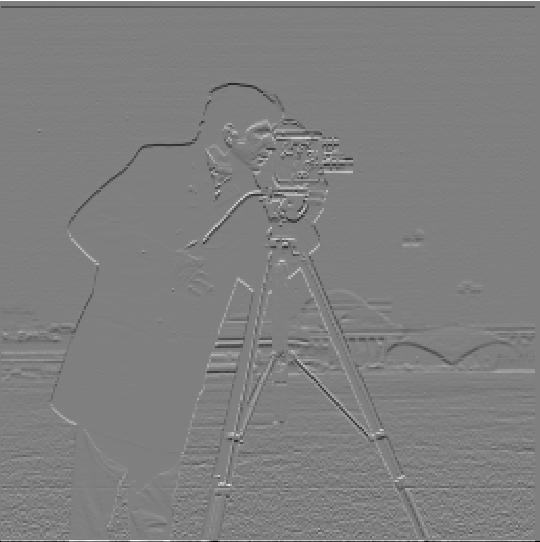
Cameraman Convolved with D_y

Cameraman Gradient Magnitude
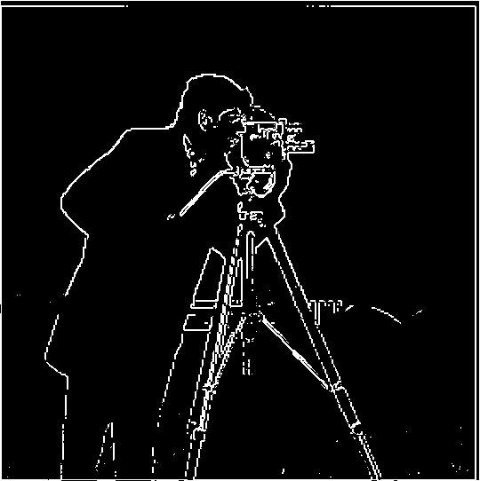
Cameraman Edge Image
(Threshold = 80)
Threshold Justification
I determined through trial and error that a threshold of 80 achieved the best balance between being able to capture the outline of the subject (i.e., cameraman)
and his tripod in its entirety (without too many breaks in the traces) and not including too much of the background edges, mainly the bridge's outline. Some comparison
images are shown below:
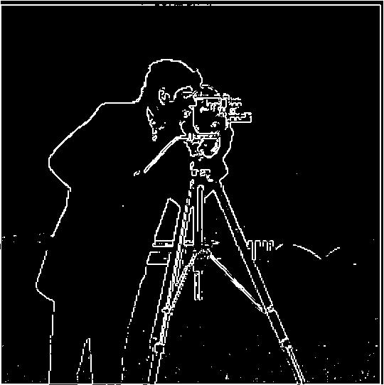
Cameraman Edge Image
(Threshold = 70)
Cameraman Edge Image
(Threshold = 80)
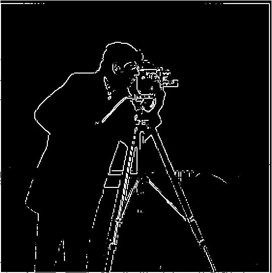
Cameraman Edge Image
(Threshold = 90)
Part 1.3: Derivative of Gaussian (DoG) Filter
Blurred Cameraman Results
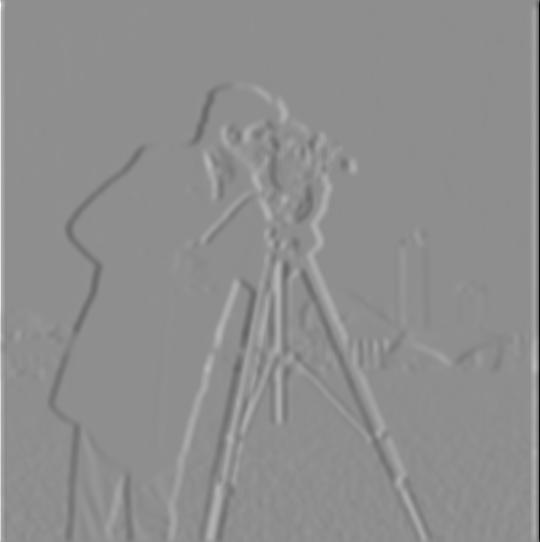
Blurred Cameraman Convolved with D_x
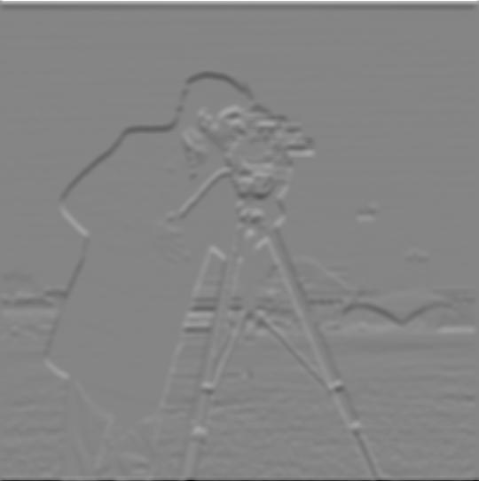
Blurred Cameraman Convolved with D_y
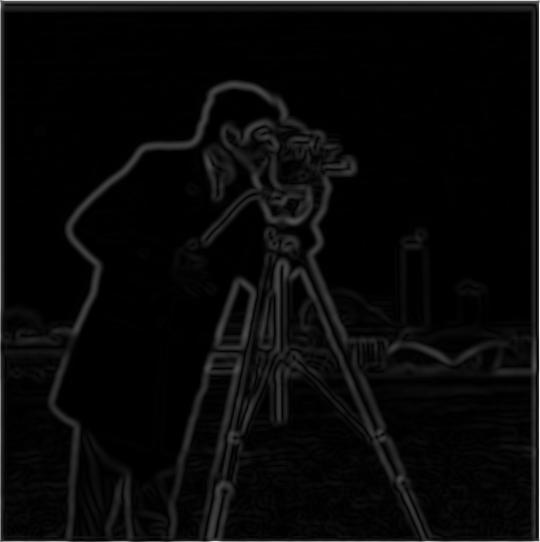
Blurred Cameraman Gradient Magnitude
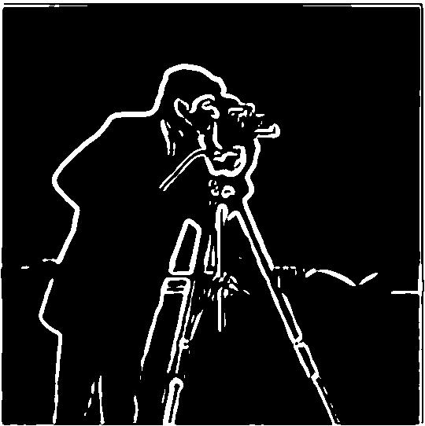
Blurred Cameraman Edge Image
(Threshold = 25)
DoG Filters
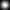
2D Gaussian Kernel
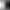
DoG_x Filter
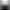
DoG_y Filter
DoG Cameraman Results
Original Cameraman
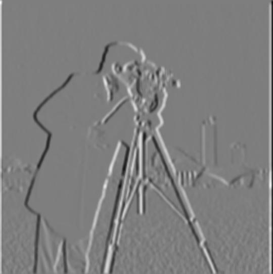
Cameraman Convolved with DoG_x
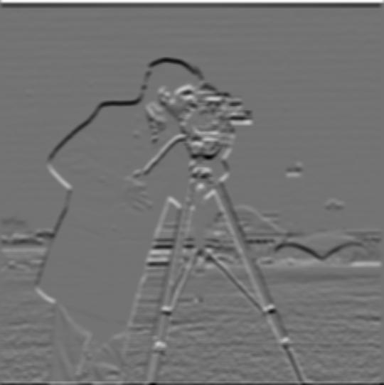
Cameraman Convolved with DoG_y
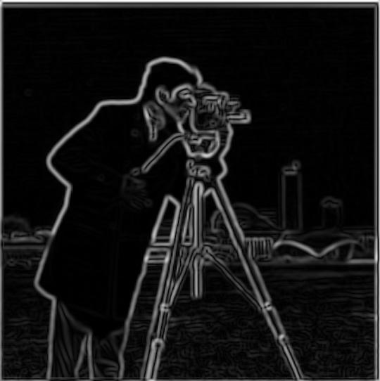
Cameraman DoG Gradient Magnitude
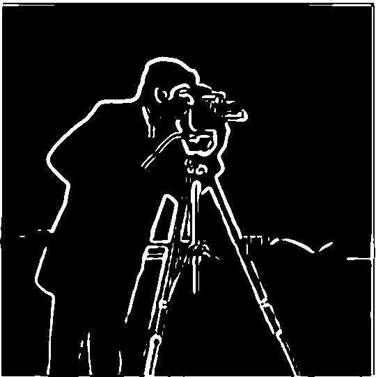
Cameraman DoG Edge Image
(Threshold = 22)
Comments on Differences and Results
Both results from this part are less noisy than the result from the previous part. This makes sense since for both approaches in this part we convolved the image with the 2D Gaussian Kernel,
which smoothens our image (i.e., low-pass filter), getting rid of high-frequency noise. This can be seen in the edge images. Both edge images have much less background noise than
the one from the previous section! As the two new edge images show, we indeed get the same results from both approaches: 1. convolving the image with the Gaussian Kernel and
then convolving with the finite difference filters and 2. convolving the Gaussian Kernel with the finite difference filters first then convolving it with the image.
Part 2: Fun with Frequencies
Part 2.1: Image "Sharpening"
Unsharp Mask Filter
The unsharp mask filter works by combining the steps detailed for sharpening into one operation. Specifically, in the step by step process, we first blur the image by convolving with the
2D Gaussian kernel to obtain a low-passed version of the image. Then, we subtract this blurred version from the original to retain the high frequencies. Then we add this high-frequency
image to the original image, effectively adding in high-frequencies to the image, making the image look sharper.
The unsharp mask filter first initializes a kernel of 0's of the same shape as the 2D
Gaussian kernel. Then, we set the center of the kernel to be 1 + sharpening_factor to apply the sharpening effect to each pixel when convolving. The plus 1 accounts for the next step where we
subtract from this kernel sharpening_factor * gaussian_2d, which takes care of the blurring. Altogether, this filter blurs, finds and adds high frequencies to the original image in one go!
Taj Mahal Sharpening

Original Taj Mahal
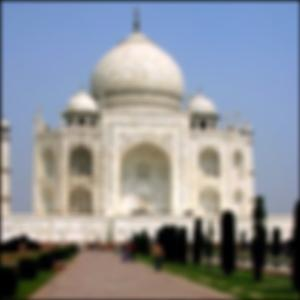
Taj Mahal Blurred
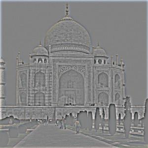
Taj Mahal High Frequencies
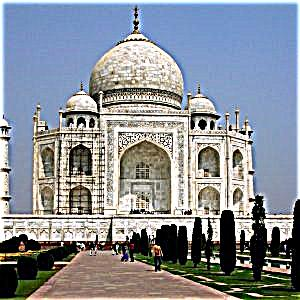
Taj Mahal Sharpened (Step by Step)
(sharpening_factor = 3)
Taj Mahal Sharpened (Unsharp Mask Filter)
(sharpening_factor = 3)
Taj Mahal Resharpening
After trying to resharpen an already sharpened image, I see that the new resharpened image looks more granular (artificially sharper) than before. This makes sense because we are
essentially further sharpening the image. When we reblur it and subtract that from the image, we recover a lot of the high frequencies we added on after the first round of sharpening. Since we are
then readding these high frequencies onto the image again, we are adding on even more high frequencies after this second round of sharpening! See results below:
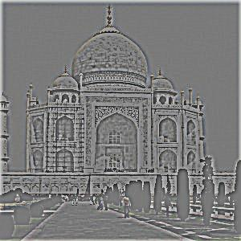
Taj Mahal High Frequencies
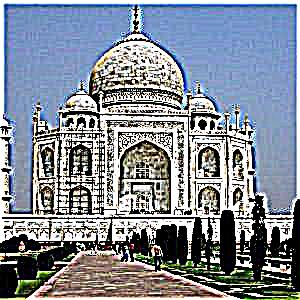
Taj Mahal Resharpened (Step by Step)
(sharpening_factor = 3)
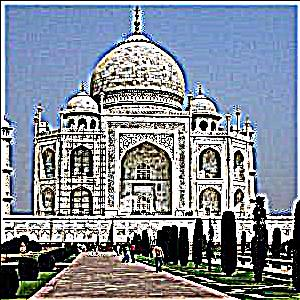
Taj Mahal Resharpened (Unsharp Mask Filter)
(sharpening_factor = 3)
Varying Sharpening Factors
Higher sharpening factors create "sharper" images:
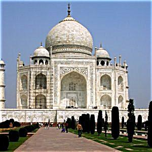
Taj Mahal Sharpened
(sharpening_factor = 1)
Taj Mahal Sharpened
(sharpening_factor = 3)
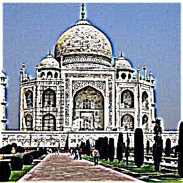
Taj Mahal Sharpened
(sharpening_factor = 10)
My Own Image
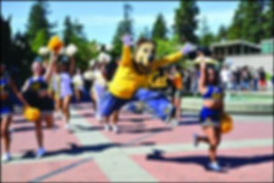
Oski Blurred
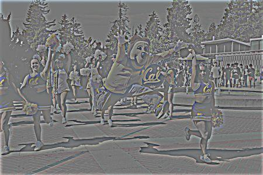
Oski High Frequencies
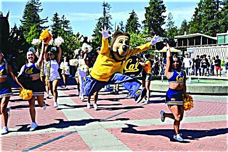
Oski Sharpened
(sharpening_factor = 1)
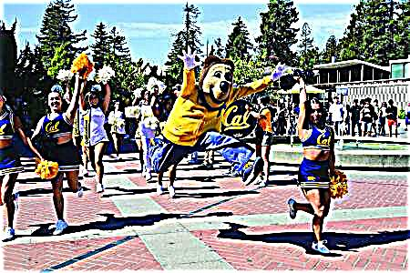
Oski Sharpened
(sharpening_factor = 3)
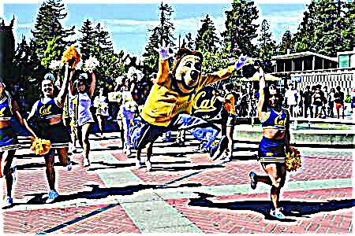
Oski Sharpened
(sharpening_factor = 5)
Part 2.2: Hybrid Images
Derek + Nutmeg Hybrid

Derek

Nutmeg
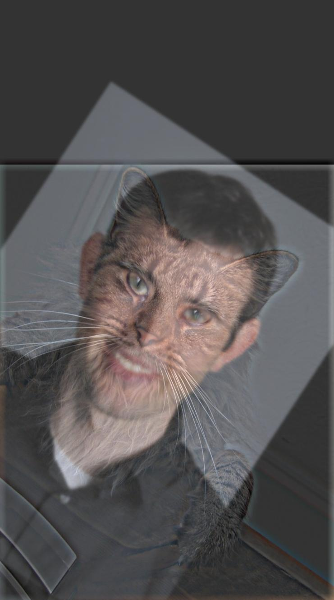
Dermeg Hybrid
Ironman + Tony Stark Hybrid
Cutoff frequency choices: for Tony Stark I set sigma = 3 (where cutoff frequency is inversely related to the sigma, "spread", of the Gaussian). This is for the low pass filter.
For the high pass filter (applied on Iron Man), I set sigma = 10. Through empirical observation, these provided the most pleasing results, where Stark is visible in the
background yet upon closer look Iron Man's sharp edges subtly dominate the facial area!
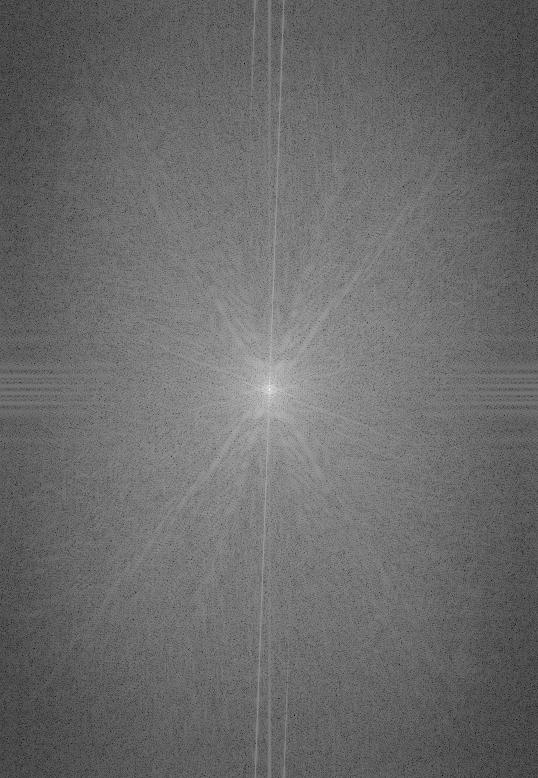
Tony Stark FFT
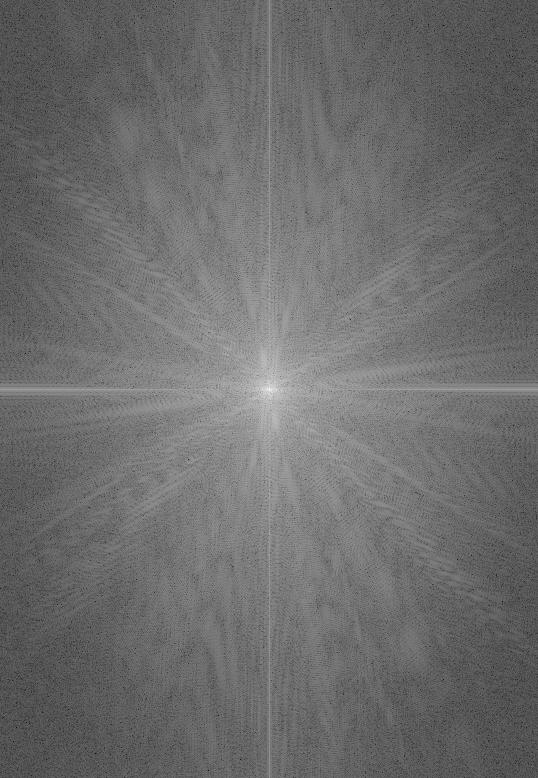
Iron Man FFT
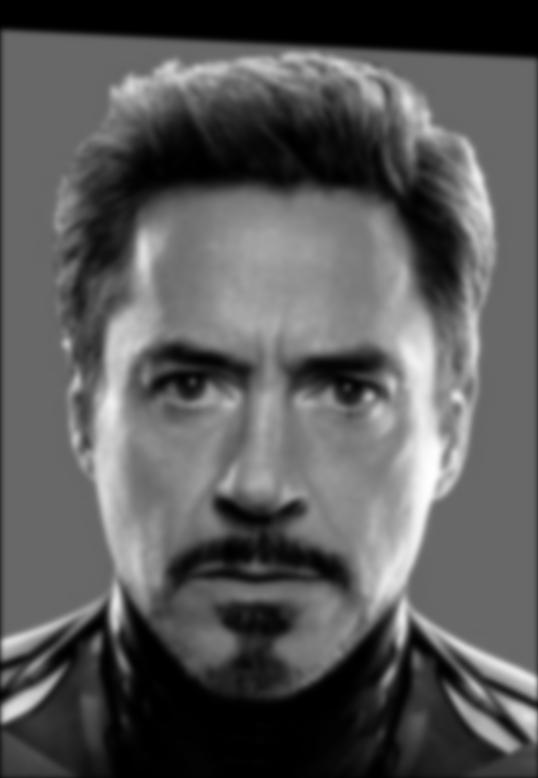
Tony Stark Low Frequencies
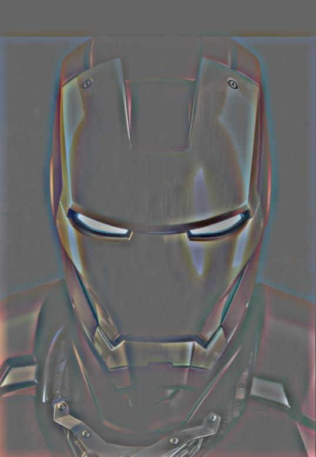
Iron Man High Frequencies
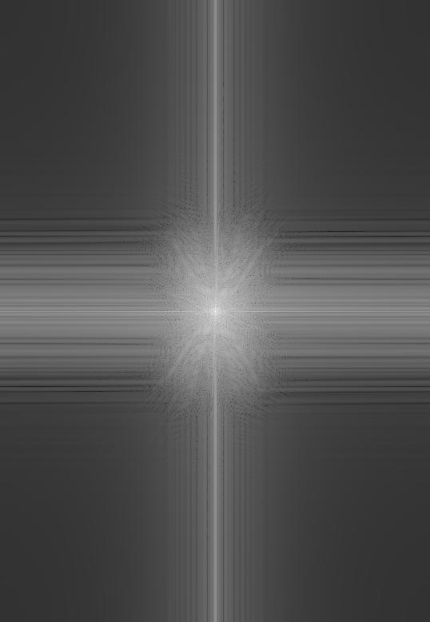
Tony Stark Low Frequencies FFT
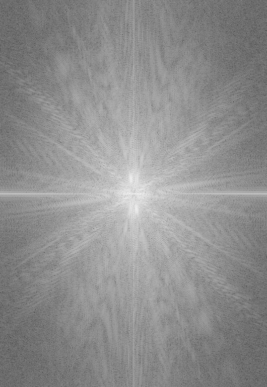
Iron Man High Frequencies FFT
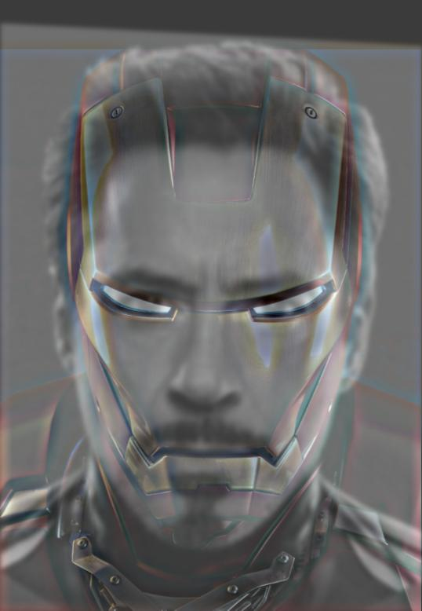
Iron Stark Hybrid
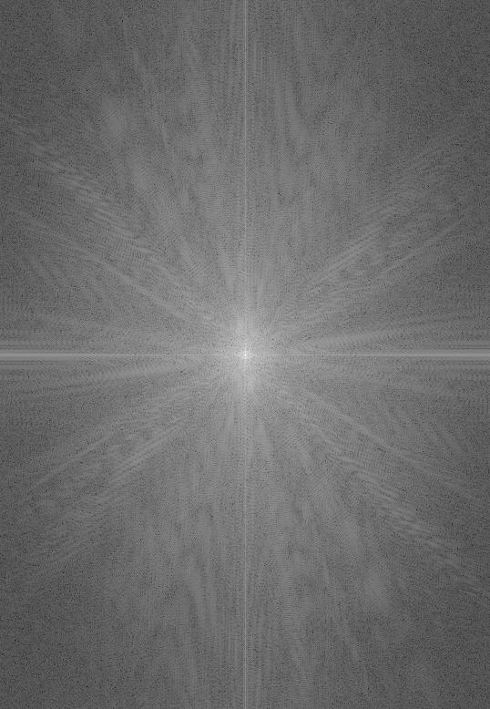
Iron Stark Hybrid FFT
Jack + Rose Hybrid

Leonardo DiCaprio (Jack)
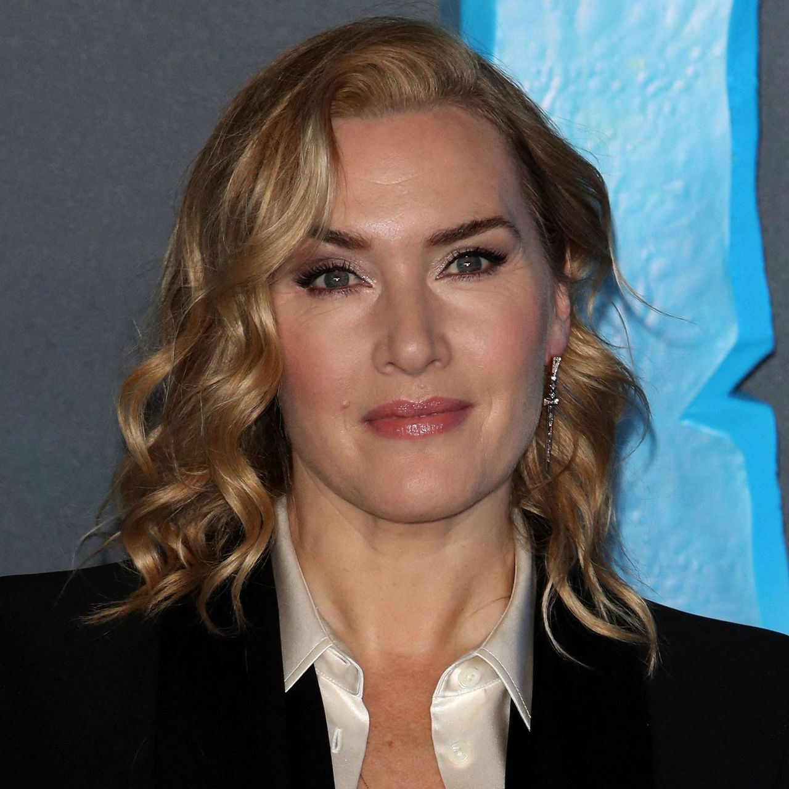
Kate Winslet (Rose)
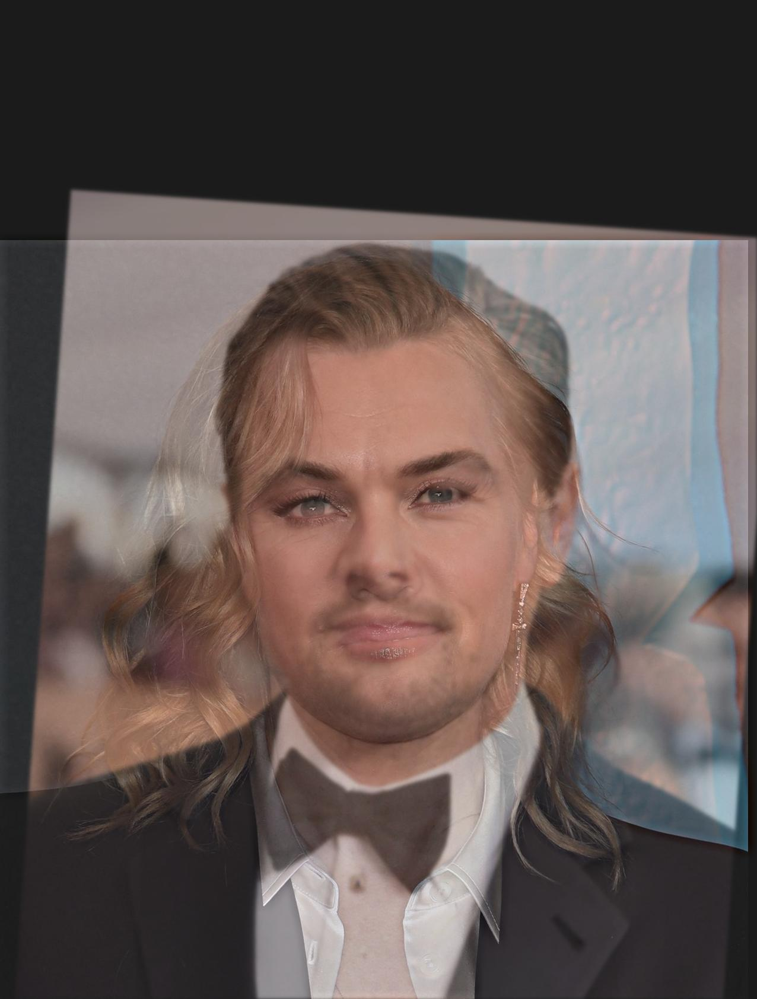
Jack & Rose